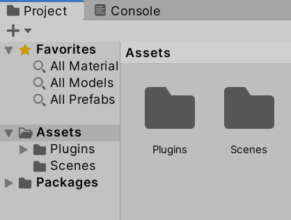
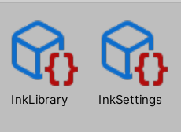
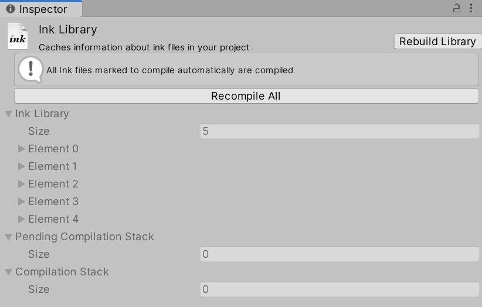
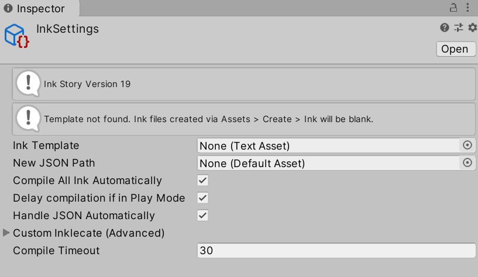
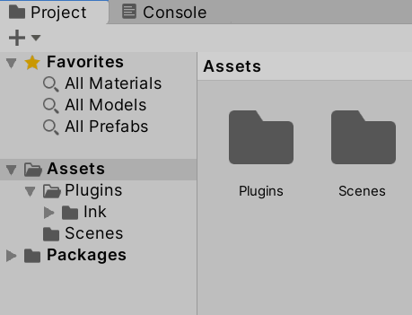
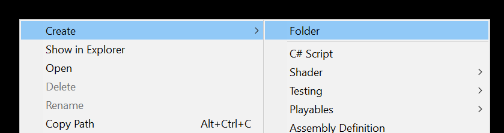
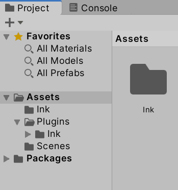
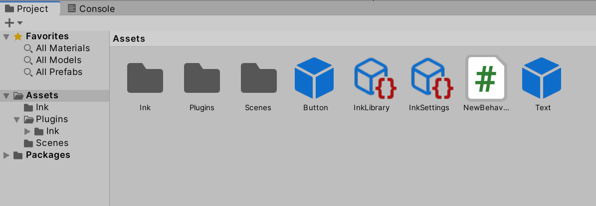
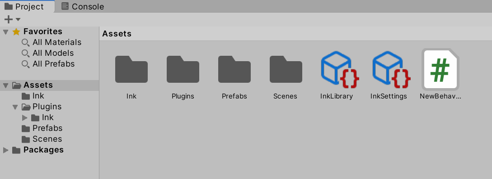
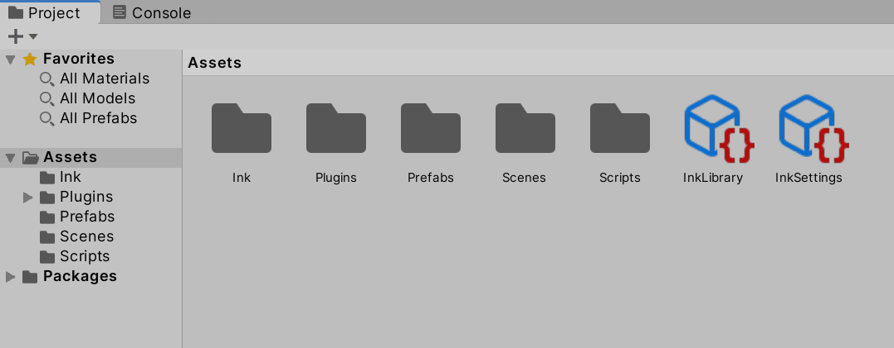

Chapter 14: Unity: Organizing Project Files
Objectives
- Identify default Unity project structure and folder organization
- Explain the purpose of InkLibrary and InkSettings files
- Create organizational folders for Scripts, Prefabs, Ink files, and Scenes
- Evaluate UPM vs .unitypackage installation folder structures
- Apply 2025 best practices for Unity project organization
Table of Contents
Reviewing Project Window Defaults

By default, Unity creates a folder named Scenes and creates a scene called “SampleScene”. After the Ink Unity Integration plugin is added via Package Manager, an additional folder named Plugins may be added to the Assets folder if you imported the plugin as a .unitypackage. For UPM installations, the plugin files remain in the Packages folder and don’t clutter your Assets.
Note: As of 2025, the recommended UPM (Unity Package Manager) installation keeps plugin files in the Packages folder, separate from your project assets. This is cleaner and makes version management easier.

In the Project window will also be two other files, InkLibrary and InkSettings. These are used by the Ink Unity Integration to save options and keep track of which files have been compiled.
InkLibrary

Clicking on the InkLibrary file in the Project window shows the current options along with options to “Rebuild Library” and “Recompile All” in the Inspector window.
InkSettings

Clicking on the InkSetting file in the Project window shows additional settings for Ink files. These can be created in the form of a template, if all Ink files should be compiled automatically or not, or what the timeout should be for compiling files.
Organizing Folders

The Assets folder, as shown in the left-hand side of the Project window, shows the current files in the Project window. The folders in this area can be navigated to show their contents in the Project window.
Note: While the Project window shows the
Assetsfolder, this is the actual directory used by the operating system to store files.
2025 Best Practices: Modern Unity projects often use additional organizational folders like:
Scripts/- All C# scriptsPrefabs/- Reusable GameObjectsScenes/- Scene filesMaterials/- Material assetsAudio/,Textures/,Models/- Media assetsResources/- Runtime-loadable assets (use sparingly)StreamingAssets/- Platform-specific assets
Using consistent naming and organization from the start makes projects easier to maintain and collaborate on.
The “Favorites” area of the left-hand side shows an easy access to common asset types of materials, models, and prefabs.
Making Folders
The use of the folder named Scenes and its files shows a good model to follow with organizing files in a project. Each type of file should be in its own folder.

New folders can be created through the addition menu or using the right-click and then going to Create -> Folder.

To begin to organize, one potential folder to create would be “Ink”.
Once created, the existing Ink can be dragged and dropped into the new folder to organize them.

Once files have been moved, their association with existing components do not have to be changed. As long as files remain in the Project window, and within the folders it has access to, none of the associations will need to be changed.
With the Ink files organized, the next would be to organize the prefab files through creating a Prefabs folder and dragging and dropping the prefab files into the new folder.

Finally, the scripting files need to be organized. There is only one “script” files at the moment, but more could be added in the future. Creating a Scripts folder and dragging and dropping the existing file finishes the organizing.

With the files moved into separate folders, the project is now organized.